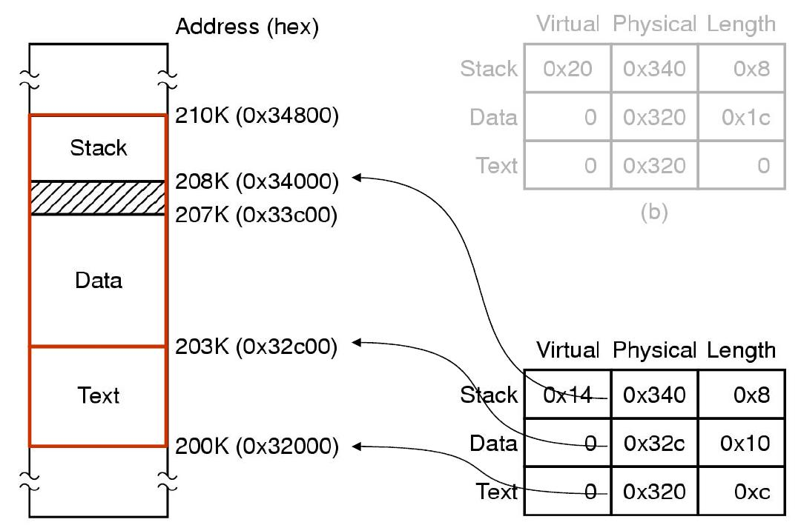

ELKS C source code is compiled by GCC for the IA16 platform
('ia16-elf-gcc
') and object & static library files are worked
with the BINUTILS ('binutils-ia16'), so using the ELF format.
At link time, custom 'ld' scripts (see '*.ld' files) convert ELF
format to legacy 'a.out' format, and drop out all that is not 'code',
'
data', 'bss' and 'rodata'. So the final executable contains
neither symbol nor comment.
Application programs in C for the ELKS operating system can also
be compiled with GCC for the IA16 platform
('ia16-elf-gcc ')
and linked with the 'ld' scripts. A typical
command line would be:
ia16-elf-gcc hello.c -o hello -melks-libc -mcmodel=small
The '-mcmodel=small' parameter specifies an executable with the splitted I/D option, this means code and data are in separate segments.
Alternatively application programs can be compiled with the bcc compiler. A command line for that would be:
bcc -ansi hello.c -o hello
Executables are still using the legacy A.OUT format defined for Minix1 with splitted I/D option:
A.OUT header
text (code) section (up to 64K)
data section (up to 64K)
The data section contains
initialized data, uninitialized data (bss) and the stack. The default
size for uninitialized data (bss) is 4Kbytes
and for the stack
4Kbytes as well. With the ia16-elf-gcc
compiler you can use the '-maout-heap=0xffff' parameter to allocate
the max heap size
including 4k of stack. You can set the stack
size with the '-maout-stack=' parameter. In this case you have to
calculate the heap size for the
' maout-heap'
parameter. The maximum size is 65520 bytes or 64Kbytes. If you deduct
4096 bytes for the stack you get 61424 for the heap or
'-maout-heap=0xeff0'.
uint32_t |
type |
uint32_t |
header size |
uint32_t |
code section size (.text) |
uint32_t |
initialized data section (.data) |
uint32_t |
uninitialized data section (.bss) |
uint32_t |
unused 1 |
uint32_t |
total data segment size |
uint32_t |
unused 2 |
ELKS does not use the optional relocation fields as the IA16 code is natively relocatable inside a segment with relative offsets.
The third byte in the type
field is a bitfield giving the properties of the a.out
file. ELKS uses the
following flags:
|
|
|
|
|
|
The
only valid values for ELKS are 0x20 and 0x30 which is 0x10 and 0x20
combined. A program compiled with ia16-elf-gcc will have a 0x30
value in this field while a program compiled with bcc will have
0x20 in there to indicate an executable program. The value 0x10 would
indicate a program with combined I/D which uses the same
segment for text and data. This model is not supported by ELKS.
A
program with splitted I/D loaded into memory will e.g. have the
following layout:

The
area between 207k and 208k is the heap. The grey box shows the memory
usage in case of a combined I/D exectuable for comparison.
The
chmem utilityTo
view the heap and stack specified for e.g. the kilo program you can
call the 'chmem' utility like this:
chmem
/bin/kilo
If
the default values for heap and stack were specified, chmem will
report these as zero. You can modify the heap parameter of a compiled
executable
using
the '-h' parameter and the stack with the '-s' parameter.
To
view the memory usage of the currently running programs, you can call
the 'ps' utility which will report information about this.
The
medium executable modelThere
is an additional executable format defined called the medium or FAR
text model. This allows for more than 64k code using relocation
to
support
a larger kernel size. The max data section size remains
64k. This model is compiled with the following command line:
ia16-elf-gcc
-melks -mcmodel=medium
For
this model the a.out header has been extended, there are
supplementary and relocation structures defined in the
'/elks/include/linuxmt/minix.h' header file.
18th
of June 2020 Georg Potthast